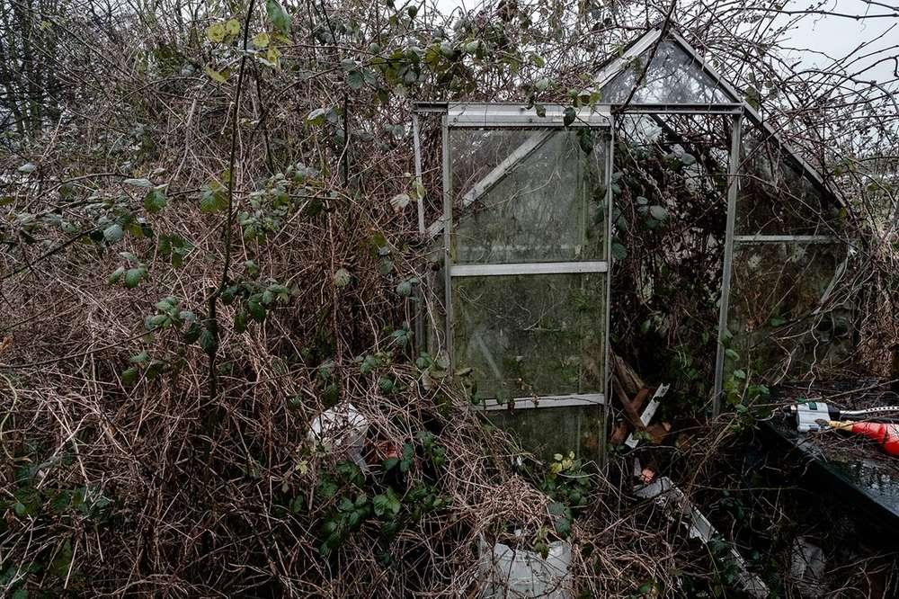

Nature Culture
Introduction
Identified as a theme throughout my work, separating nature from culture is a western anthropocentric interpretation of land through the justification and appropriation of the new world terra nullius. It is embedded in how we read the landscape today (urban and rural, and wilderness and wasteland), leading to paradoxes such as the pursuit of idealised wilderness (which is manipulated and "preserved" by mankind) while nature left to natural evolution on wasteland has negative connotations.
Breaking down theme
Ambivalence
I am interested in the "nature and origins of the ambivalent feelings we experience in relation to urban woodland and other wilder urban landscapes such as derelict sites that have been re-colonized with vegetation as a result of natural succession" (Jorgensen and Tylecote, 2007, p. 445). The sight of nature entwined with culture creates a vagueness of place, questioning which one is in control.
Ruins and death
A morbid aspect of the theme with contemporary and historic ruins (culture) engulfed by nature reminding us of the futility and ephemerality of life interlinking themes of existentialism, legacy and time. For example the image of the greenhouse tangled with bines, reminding us that horticulture is just an appropriated form of nature and can be undone through neglect.

Subversiveness
Spaces which fall under the above are usually neglected and unwatched making them suitable for the social marginalised. For example, unlike structured and supervised outdoor areas such as urban parks and squares, children can gather in large groups and manipulate the environment without opposition. Additionally, it follows that:
[f]or some people, being in a space in which there is a complete absence of surveillance, regulation and frequently, other people, is a highly psychologically liberating experience in which the individual is free to be whatever they want to be... (Jorgensen, 2012, p. 8).
Rejecting the dualism
Recent reading, particularly Haila, Y. (2000) [beyond the nature culture dualism], has made me reconsider the dichotomy. Not in the way of dismissing it entirely as visually these narratives work, but to rethink the dichotomy as interconnected relationships.
Being open to interpretation rather than being locked into the dualism will produce interesting results rather than stale juxtapositions.
Bibliography
Jorgensen, A. and Tylecote, M. (2007) ‘[Ambivalent landscapes]—wilderness in the urban interstices’, Landscape Research, 32(4), pp. 443–462.
Jorgensen, A. (2012) ‘Introduction’, [Urban Wildscapes]. Routledge, pp. 1–15.
Date
8/9/2020
Topics:
nature culture, dualism, theme,
Backlinks
Surprise View
Without knowledge of the history of the site, the millstones lack context and are interesting industrial artefacts amongst the bracken demonstrating [[nature culture]] dichotomy.